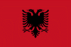

|
Länderinformationen Albanien
1. Das Wichtigste auf einen Blick2. Sehens- und Hörenswertes
3. Politik & Gesellschaft
4. Schmeckenswertes
5. Medien
6. Reisetipps
1. Wissenswertes
|  | Hier haben wir die wichtigsten
Zahlen und Fakten zum Land Albanien und der dort gesprochenen Sprache zusammengetragen. |
Wir freuen uns, dass Sie sich für einen Expresskurs von Sprachenlernen24 entschieden haben. Um Ihnen die Reisevorbereitungen zu erleichtern und Ihnen einen kleinen Vorgeschmack dessen zu geben, was Sie in Albanien erwarten wird, haben wir hier Wissenswertes, Wichtiges, Kurioses, Interessantes, Kulinarisches und noch viele Informationen mehr rund um das Land, seine Sprachen und Menschen für Sie zusammengetragen.
In diesem Länderbericht finden Sie zum Beispiel Antworten auf diese Fragen:
- Zu welcher Sprachfamilie gehört das Albanische?
- Wie groß ist Albanien?
- Wie ist die ökonomische Situation des Landes?
- Mit welcher Währung bezahlt man dort?
- Welche Uhrzeit gilt in Albanien?
- Welches sind besonders eindrucksvolle Reiseziele?
- Was erwartet mich in kulinarischer Hinsicht?
- Wie ist die politische Lage im Land?
- Gibt es Tageszeitungen, die auf Albanisch erscheinen und im Internet zu finden sind?
- Wie ist das Klima beschaffen?
- Was sind landestypische Eigenheiten?
- Was soll ich einpacken, wenn ich verreise?
Eineerholsame Reise und viele wunderschöne Urlaubserlebnisse wünscht Ihnen,
das Team der Sprachenlernen24-Redakteure
 Die albanische Sprache
Die albanische Sprache
Albanisch wird weltweit von rund 7,5 Millionen Menschen gesprochen, wovon in der Republik Albanien (Republika e Shqipërisë) rund 3,5 Millionen und weitere 2,5 Millionen auf die anderen Balkanstaaten verteilt leben. Von einer Bevölkerungsmehrheit wird die Sprache in Albanien und im Kosovo gesprochen.
Größere albanischsprachige Minderheiten finden sich auch in Italien und Griechenland. Eine weitere Million Menschen, die Albanisch als ihre Muttersprache sprechen, ist durch Emigration über die ganze Welt verteilt. Vielleicht kennen Sie ja auch jemanden in Ihrer Nachbarschaft, Ihrem Bekanntenkreis oder Ihrem Betrieb, der albanisch spricht.
Albanisch ist eine selbständige Sprache innerhalb der indoeuropäischen Sprachenfamilie, die sich keiner der großen Gruppen (z. B. den romanischen oder slawischen Sprachen) zuordnen lässt.
Die Sprache teilt sich in zwei Dialekte, den im Norden verbreiteten gegischen und den im Landessüden gesprochenen toskischen Dialekt.
In der albanischen Hochsprache überwiegen eher Elemente des toskischen Dialekts.
Im albanischen Alphabet werden einige Buchstaben verwendet, die im deutschen nicht vorkommen bzw. anders ausgesprochen werden. Diese werden wir Ihnen in der folgenden Tabelle kurz vorstellen:
Buchstabe/ Buchstabenkombination |
Beschriebung der Aussprache
|
c
|
z: wie in Zaun
|
ç
|
stimmloses tsch: wie in
'Tschuldigung
|
dh
|
wie stimmhaftes englisches th: the,
that
|
ë
|
wie schwachbetontes ö: Mönch;
am Wortende kaum hörbar
|
gj
|
stimmhaftes dj/dsch
|
ll
|
gerolltes Zungen-l
|
nj
|
wie spanisches
ñ: niño
|
q
|
stimmhaftes tj/tsch
|
rr
|
gerolltes Zungen-r
|
sh
|
stimmloses sch: wie in schade
|
th
|
wie stimmloses englisches th: throw
|
x
|
stimmhaftes ds
|
xh
|
stimmhaftes dsch
|
y
|
wie deutsches ü
|
z
|
weiches s
|
zh
|
stimmhaftes sch
|
 Einwohner
Einwohner
In Albanien leben rund 3,6 Millionen Einwohner, wovon rund 95% Albaner sind. Weitere ethnische Gruppen sind Griechen (etwa 3%) sowie Roma, Serben, Bulgaren und Mazedonier. Das Durchschnittsalter der Bevölkerung liegt bei rund 29 Jahren. Die albanische Bevölkerung ist damit wesentlich „jünger“ als beispielsweise die deutsche, bei der das Mittel bei knapp 43 Jahren ist.
Die durchschnittliche Lebenserwartung liegt bei rund 75 Jahren (Männer) und knapp 81 Jahren (Frauen) und ist damit nur unwesentlich niedriger als in Deutschland.
 Fläche
Fläche
Die Republik Albanien hat eine Fläche von knapp 29.000 km². Dies entspricht ungefähr der Größe Belgiens.
 Währung
Währung
In Albanien gilt als Währung der Lek, der in 100 Quindarka unterteilt ist.
Einen aktuellen Wechselkurs von Lek zu Euro können wir Ihnen an dieser Stelle leider nicht bieten, dieser lässt sich jedoch im Internet mit wenig Aufwand bequem finden (geben Sie einfach bei einer Suchmaschine den Begriff „Währungsrechner“ ein). Natürlich erfahren Sie den Kurs auch bei Ihrer Bank.
 Ökonomische Situation
Ökonomische Situation
Im Vergleich zu anderen Staaten des Balkans, ist die albanische Wirtschaft noch wenig entwickelt und der Lebensstandard einer der niedrigsten in Europa. Gerade das marode Straßen- und Schienennetz ist ein entscheidendes Hindernis für die wirtschaftliche Entwicklung, da dies große logistische Probleme schafft und Investoren hemmt. Auch die Stromversorgung in Albanien muss als mangelhaft angesehen werden, Stromausfälle stellen keine Seltenheit dar. Problematisch ist für die wirtschaftliche Situation des Landes zudem das große Ausmaß an Schattenwirtschaft. Es wird geschätzt, dass hierin eine Summe erwirtschaftet wird, die fast halb so hoch ist wie das albanische Bruttoinlandsprodukt selbst.
Fast ein Viertel der Erwerbstätigen ist in der Landwirtschaft tätig. Die wichtigsten landwirtschaftlichen Erzeugnisse sind Weizen, Mais, Gemüse, Wein, Früchte und Fleisch. Der industrielle Sektor, in dem rund 15% der Bevölkerung tätig sind, fertigt in erster Linie Textilien, Nahrungsmittel, Holzerzeugnisse, Zement, Chemikalien, Metalle und andere Rohstoffe.
Mehr als die Hälfte der Erwerbstätigen ist im Bereich der Dienstleistungen tätig, wobei allerdings der Tourismus bislang noch wenig entwickelt ist.
Eine wichtige Einkommensquelle der albanischen Bevölkerung machen die Überweisungen der im Ausland lebenden Exilalbaner aus. Man schätzt, dass auf diese Weise jährlich mehr als eine halbe Milliarde Euro ins Land fließen.
Etwa ein Viertel der Bevölkerung lebt unterhalb der Armutsgrenze, zudem sind nach offiziellen Angaben 14% ohne eine feste Arbeit. Nach inoffiziellen Schätzungen allerdings liegt die Erwerbslosenquote in Albanien bei bis zu 30%.
 Zeitzone
Zeitzone
Albanien liegt in derselben Zeitzone wie Deutschland, Österreich oder die Schweiz. Sie brauchen Ihre Uhren bei einer Reise also nicht umstellen.
Im Frühling werden dort die Uhren ebenfalls auf Sommerzeit umgestellt.
Im nächsten Kapitel haben wir einige ausgesuchte Reiseempfehlungen zusammen gestellt.